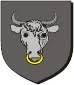

Antavla
22331401 Ulfhild Simonsdatter Ku til Tomb

Far:
Simon Torgeirsson Ku til Tomb (<1290 - )
Född:
omkring 1185.
[1]
Barn med
22331400 Harald Agmundsson Stangarfylja Bolt (1180 - 1227)
Barn:
Ogmund Haraldsson Bolt (1227? - 1270)
Personhistoria
Årtal
Ålder
Händelse
1185?
Födelse omkring 1185
[1]
1227?
Sonen
11165700 Ogmund Haraldsson Bolt
föds omkring 1227 Ringerike, Buskerud, Norge
[2]
1227
Partnern
22331400 Harald Agmundsson Stangarfylja Bolt
dör 1227
[1]
1260
Barnbarnet
5582850 Håkon Ogmundsson Bolt
föds 1260 Viken, Ringerike, Norge
[3]
1270
Sonen
11165700 Ogmund Haraldsson Bolt
dör 1270 Norge
[2]
Källor
[1]
Jan Edgar Michelsen
[2]
Jahn Edgar Michelsen
[3]
Ulf Palmqvist